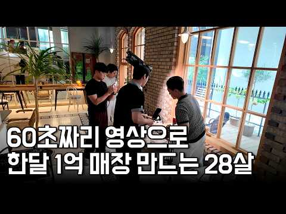
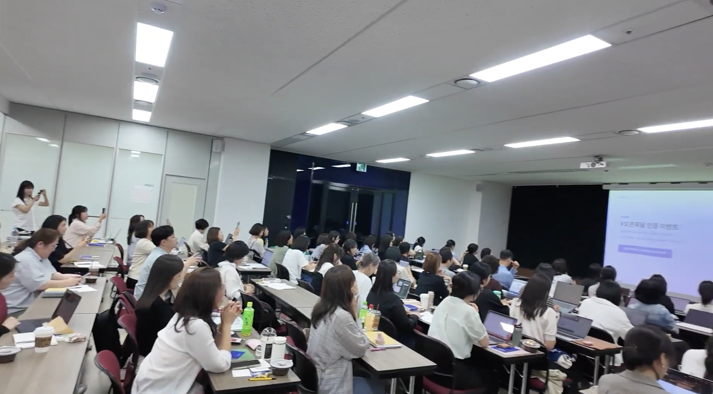
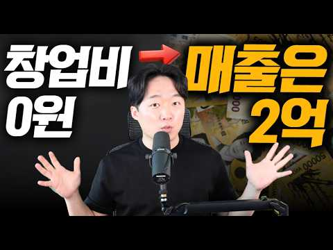

퍼스널브랜딩 포트폴리오
오은환의 하이라이트
AI · 콘텐츠 · 개인의 전문성
전문성이 브랜드가 되는 채널.
AI·콘텐츠 노하우를 시청자의 일상에 연결합니다.
유튜브 퍼스널브랜딩 · 협업 제안
강사별 자체 유튜브 채널을 브랜딩하고,
사찍남 출연·PPL·배너로 첫 유입을 만듭니다.
인물 자료를 참고한 AI 연출 영상 · 흰 실루엣은 다음 주인공의 자리
기획하는 사람도,
직접 채널을 운영해야 한다고 믿습니다.
01 — 함께한 채널
AI · 콘텐츠 · 개인의 전문성
AI·콘텐츠 노하우를 시청자의 일상에 연결합니다.

실제 채널 콘텐츠사업가 · 현장 · 인터뷰
직접 운영한 인터뷰 채널의 경험을 기획에 담습니다.
이 강사에게
배우고 싶은 이유를
영상 안에서 보여줍니다.
AI 활용 · 자동화 · 실전 튜토리얼
입문부터 실전까지, 따라 해보는 AI 콘텐츠.
채널 소개 사진과 실제 콘텐츠입니다. 영상과 채널 링크에서 원본을 확인할 수 있습니다.
02 — 한눈에 보는 협업
 01
01강사의 강점을 영상과 채널에 담습니다.
출연·PPL·배너로 강사와 강의를 알립니다.

03전용 링크에서 신청·상담으로 연결합니다.
실제 채널 화면과 세미나 현장으로 보여드리는 팬그로브의 협업 방식.
03 — 오은환의 하이라이트 실제 사례
전문성을 보여주는 콘텐츠
유튜브 원본 보기 ↗
추가 사례 · 알리다 마케팅영상 → 전용 링크 → 상담 신청실제 연결 구조 보기＋출처: 알리다 마케팅 · 2026.09.27. 썸네일의 매출은 영상 제목이며, 이번 광고의 성과 수치가 아닙니다.
04 — 유튜브 협업을 제안드립니다
한 분의 강사, 하나의 대표 강의.
기획·제작 범위와 일정을 함께 확정.
콘텐츠·신청 흐름을 보고 다음 집행.
브랜딩·콘텐츠 기획, 제작·운영 조율
사찍남 광고 구성과 반응 리뷰
강의 정보·촬영 협의·내용 확인
신청 페이지·상담·강의 제공·신청 집계
강사 출연·PPL·배너로 시작
반응이 좋은 주제와 메시지 정리
강의와 시청자층이 맞는 채널로 확대
추가 채널은 참여 가능 여부를 확인하고, 채널별 집행 조건을 별도로 협의합니다.
05 — 상품과 협업 조건
강사 개인 채널의 브랜딩 계약과
사찍남 광고 상품을 구분해 제안합니다.
강사 포지셔닝 · 콘텐츠 기획 · 채널 운영 방향
인트로·제목·썸네일 설계 · 콘텐츠 반응 리뷰
600만 원
계약 기간·제작 편수·촬영·편집 범위 별도 협의01 / 영상 내 자연스러운 소개
250만 원 / 1회
출연·PPL·배너로 강사와 강의를 소개합니다.
02 / 콘텐츠에서 신청까지
350만 원 / 1회
광고에서 강의·상담 신청까지 연결합니다.
03 / 월 고정 계약 시 건당 10% 할인
252만 원 / 1건
월 고정 계약 시, 집행 1건마다 적용합니다.
위 사찍남 광고 상품에 동일하게 적용합니다.
금액은 부가세 별도입니다. 성과 수수료는 사찍남 광고로 유입된 정산 대상 매출에 적용하며, 매출 귀속·환불 처리·구독 정산 기간은 계약서에서 정합니다. 강사 개인 채널 브랜딩의 계약 기간과 제작 범위도 계약 시 확정합니다.
NEXT — 첫 강사를 함께 정하는 것부터